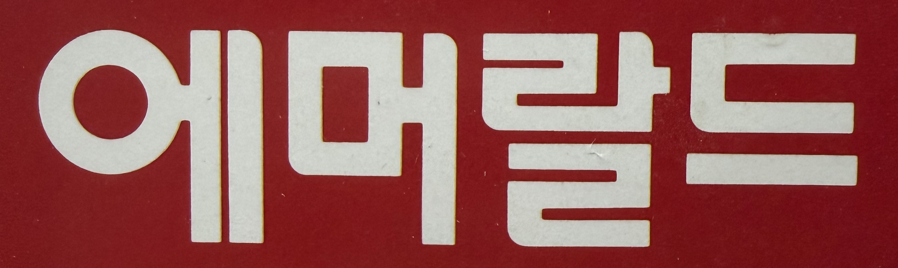
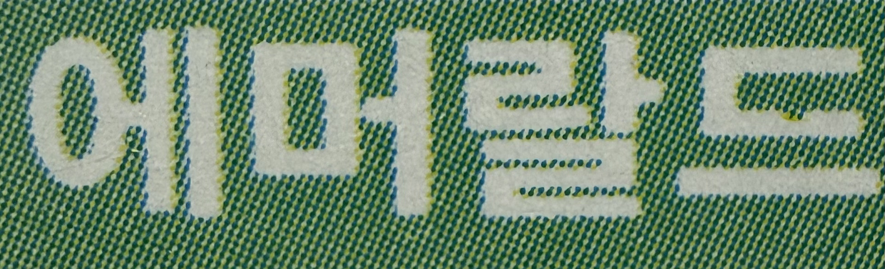
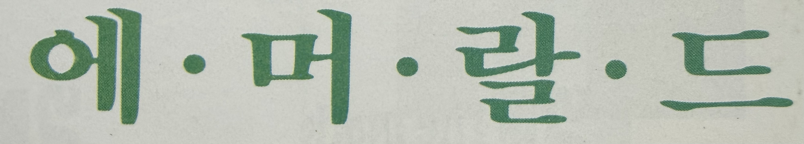
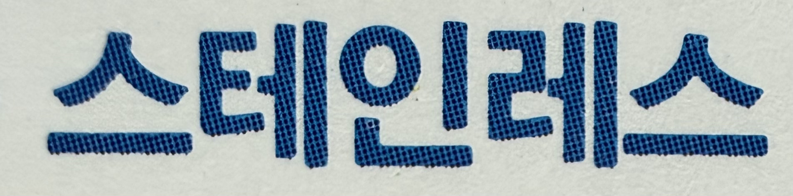
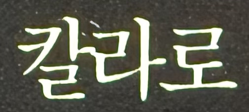
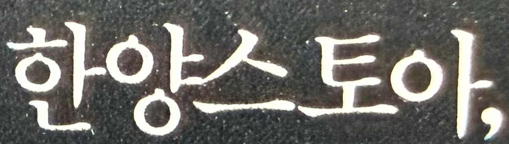
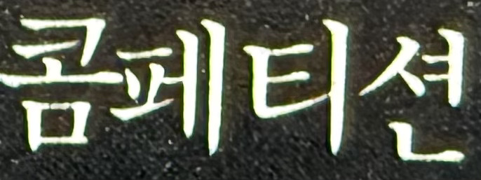
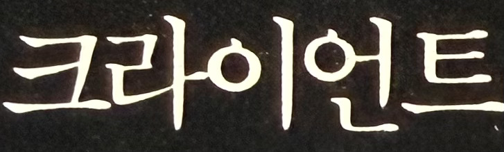
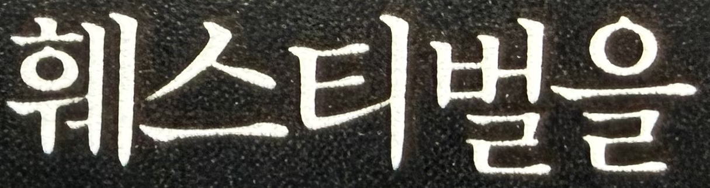
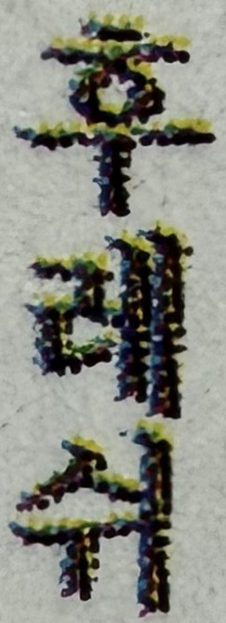

현재 표준 표기 : 에메랄드(emerald)
월간디자인 1992년 9월호 한양화학 광고에서 발췌

첫 음절의 schwa 계열 발음을 ‘에메’로 표기
'r' 앞 모음을 ‘라’로 단순화하여 ‘에메랄드’로 표준화
월간디자인 1992년 9월호 한양화학 광고에서 발췌

에메랄드는 5월 탄생석으로, 행복과 희망,지혜 등을 의미한다.
월간디자인 1992년 9월호 한양화학 광고에서 발췌

현재 표준 표기 : 스테인리스(stainless)
외래어 표기법(발음 기준음절화)에 따라 스테인리스로 정리
월간디자인 1990년 9월호 23쪽에서 발췌

현재 표준 표기 : 컬러(color)
/ʌ/ 계열 모음을 '컬’로 처리해 “컬러”로 표준화
‘칼라’는 과거 발음 중심 표기 방식에서 남은 형태
월간디자인 1990년 9월호 한국 광양사 -이달의 크리에이티브-에서 발췌

현재 표준 표기 : 스토어(store)
외래어 표기법에서 모음 + r탈락 구조를 반영해 '스토어'로 표기
'스토아'는 철자 s-t-o-r-e를 직역으로 읽은 비표준 형태
월간디자인 1990년 9월호 한국 광양사 -이달의 크리에이티브-에서 발췌

현재 표준 표기 : 컴피티션 (competition)
외래어 표기법에 따라 /ə/는 생략되고
ti + ʃən 계열 발음이 “티션”으로 표기
월간디자인 1990년 9월호 한국 광양사 -이달의 크리에이티브-에서 발췌

현재 표준 표기 클라이언트(client):
'cl-'은 ‘클’로, ai는 ‘라이’로 처리하여 “클라이언트”로 표기
월간디자인 1990년 9월호 한국 광양사 -이달의 크리에이티브-에서 발췌

현재 표준 표기 : 페스티벌(festival)
외래어 표기법에서 f는 ㅍ, e는 ‘에’로 처리되어 “페스티벌”로 표기
월간디자인 1990년 9월호 한국 광양사 -이달의 크리에이티브-에서 발췌

현재 표준 표기 : 프레시(fresh)
'후레쉬'는 일본식 발음 영향으로 인한 비표준 표현
'f'는 'ㅍ', 're'는 '레', 'sh'는 '시'로 표기
자칫 잘못하면 플래시(flash)와 혼동할 우려가 있음
월간디자인 1993년 7월호 64쪽에서 발췌